Lembremos que:
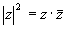
Daí temos que:
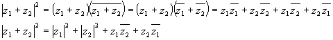
Utilizando a propriedade
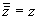
, teremos: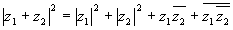
Lembrando agora que
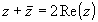
chegaremos a: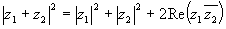
Sabemos também que:
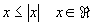
, logo: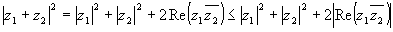
Mas
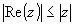
, daí: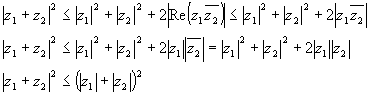
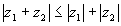
Interpretação Geométrica:
Observe na figura abaixo rebatemos
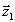
sobre o eixo real e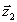
sobre a reta suporte de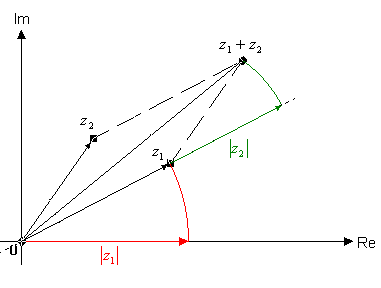
Procedemos, em seguida, com os rebatimento sobre o eixo real; chegando à figura abaixo:
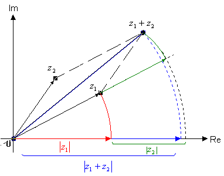
Percebemos facilmente que, a igualdade; ocorrerá quando e  forem paralelos.
forem paralelos.
Robson Silva de Sousa
Bibliografia:
Funções de Uma Variável Complexa
Ávila, Geraldo S. S.
Livros Técnicos e Científicos Editora S.A.
Editora Universidade de Brasília
1974
 Voltar
Voltar